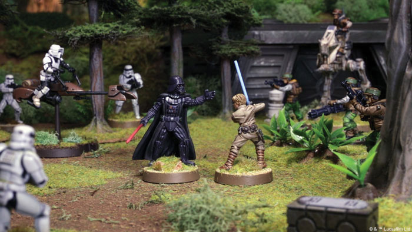

Miniature Hub
Star Wars Legion
Star Wars legion is why I first dove into this hobby I remember watching a youtube video while in lockdown and thought "This seems fun" which it is! I of course was unsure about the painting at first but I eventually took the plunge and bought the core set and haven't regretted my purchase.

So far there are four factions you can play as in legion, they are the following:
- The Galactic empire
- Fleshed out
- Decent troops
- Decent generals
- Broad range of strategies to win
- The rebel alliance
- Fleshed out
- Cheaper than empire
- Strong heroes
- Has to resort to hit and run tactics
- The Grand Army of The Republic
- Strongest units in the game but more expensive
- New so there's less range than rebels and empire
- Good heroes but hard to stack a huge list like the CIS can
- The confederacy of independant systems
- Cheapest units in the game
- Commanders do balance this out though
- Like the republic it's a new faction so there's less variety
- Meant to overwhelm their opponents with sheer numbers or act as cannon fodder so commandes can get into range
The links below will show you to some SW Legion products if you wish to browse or even purchase some, I'd advise you start off with either of the core sets but it's up to you
Darkstar games
Zatu games
Weyland games